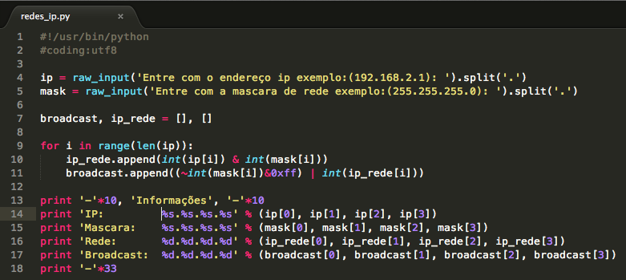

Tudo sobre Python
Conceito
- Qual o conceito do Python?
O Python é uma linguagem de programação amplamente usada em aplicações da Web, desenvolvimento de software, ciência de dados e machine learning (ML). Os desenvolvedores usam o Python porque é eficiente e fácil de aprender e pode ser executada em muitas plataformas diferentes.
- Facilidade de aprendizado:
Talvez a vantagem mais evidente de programar em Python seja a forma intuitiva e fácil com que o desenvolvedor consegue aprender a linguagem. Como é bastante simples, algumas noções de pseudocódigo já são suficientes para proporcionar uma curva de aprendizagem extremamente rápida.
Vantagens de utilizar a linguagem Python:
- Facilidade de aprendizado e utilização por diversos públicos;
- Versatilidade e uso
- É uma linguagen gratuita e de fonte aberta;
Vantagens e Desvantagens da Linguagem Python:
- Python é fácil de Ler, escrever e Aprender;
- O Python é uma lingaguem interpretada;
- Melhora a Produtividade;
- Declaração de Variáveis;
- Python é multiplataforma;
- Python é Open Source;
Código básico em Python:
Calcular Endereço de Rede e Endereço de Broadcast em Python:
- Fala galera este é um post curto, que tem como objetivo mostrar uma porção de código em Python. O objetivo é ler um número IP e a máscara e calcular o endereço de Rede e de Broadcast do IP. Bom agora chegou a hora de mostrar o código.

- Vamos lá nas linhas 4 e 3 li o ip e a mascara respectivamente. Na linha 7 criei duas listas que vão armazenar o endereço de broadcast e endereço de rede.
Nas linhas 9, 10 e 11 fiz um for. Na linha 10 eu adiciono um elemento a lista do endereço de rede aplicando um E lógico, mas antes eu converto os números para inteiros para poder aplicar o operador.
Na linha 11 eu calculo a mascara aplicando o OU lógico e negando o endereço da mascara, e com isso aplico um E lógico para que o range do número fique entre 0..255 (8 bits).
Da linha 13 a linha 18 é só perfumaria para exibir o resultado.
Voltar